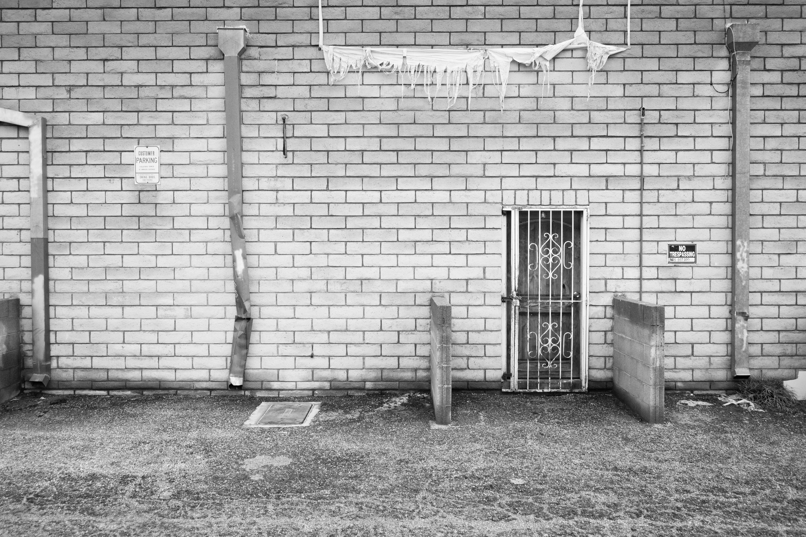

In a narrow alleyway tucked beheind a row of small, local stores, is a quiet testament to the subtle beauty that often goes unoticed. Behind the bustle of daily life, there is a stillness in the chipped bricks, the locked doorway, and the damged piping that winds its way along the wall. A banner surviving on its last thread, once vibrant, now just a memory of something brighter. Yet, in this decay, there's a quiet elegance. In every imperfection there's a whisper of past life, a resilience that turns neglect into something strangely captivating. This image is a reminder that beauty is not always found in pristine places, sometimes it blooms in the most unexpected, overlooked corners of our world.